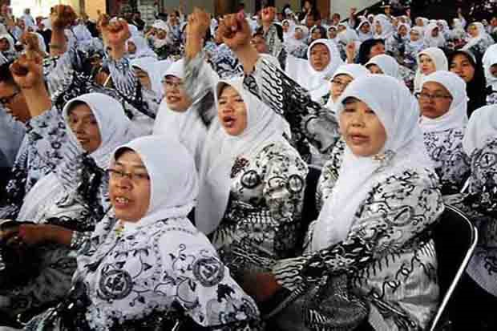

Nama
suka membantu


Nama
suka membantu
Berita

Guru Dituntut Bisa Ciptakan Inovasi Pembelajaran
Koran Sindo
Sabtu, 5 Oktober 2019 - 06:35 WIB
TANGSEL - Perkembangan era revolusi industri 4.0 berdampak pada perubahan di berbagai bidang, salah satunya pendidikan. Karena itu, peran guru sangat penting untuk menyiapkan sumber daya manusia (SDM) yang tangguh dan handal untuk menghadapi era disrupsi ini.
Rektor Universitas Terbuka Ojat Darojat mengatakan, saat ini terdapat kemajuan dalam bidang teknologi terutama untuk interaksi akademik yang sedang berubah. Karena itu, menurut dia, Fakultas Keguruan dan Ilmu Pendidikan (FKIP) juga harus menyiapkan diri untuk menjawab tantangan ini. Utamanya menyiapkan SDM guru yang handal juga.
FKIP, ujarnya, harus bisa mengikuti perkembangan jaman untuk menciptakan inovasi-inovasi baru untuk memantapkan profesionalisme para guru di Tanah Air. Hal itu diungkapkan Ojat dalam Forum Komunikasi Pimpinan FKIP Negeri se-Indonesia di Kampus UT Pondok Cabe, kemarin.
Ojat mengatakan, inovasi ini penting sebab pada saat ini sedang memasuki satu tahapan baru di dalam berbagai aspek kehidupan. Termasuk pendidikan, di mana harus ada upaya untuk mengintegrasikan kemajuan yang dicapai dalam teknologi informasi dalam proses pembelajaran.
Saat inipun, lanjutnya, tren yang sedang terjadi bahwa para generasi muda atau mahasiswa sudah sangat terbiasa memanfaatkan teknologi informasi dan komunikasi (TIK) dengan pemanfaatan gawai seperti kuliah online.
Menurut dia, kuliah online merupakan inovasi baru, sehingga kuliah tidak lagi dibatasi lagi ruang kelas. “Cara-cara lama seperti memberikan kuliah di depan kelas, dibatasi ruang kelas, jam pelajaran itu harus digeser (dengan) menciptakan inovasi-inovasi baru. Learning delivery-nya mengarah ke online learning. Sehingga, nanti mahasiswa kita bisa belajar lebih fleksibel, belajar di mana dan kapan saja,” ungkapnya.
Forkom ini, ujarnya, menjadi sangat penting karena Indonesia harus bersiap menghadapi perkembangan sains dan teknologi di era 4.0. Termasuk pengaruhnya di bidang pendidikan. Ketua Forum FKIP Indonesia Sofendi mengatakan, pada pertemuan ini dibahas tentang program profesi guru (PPG) prajabatan mandiri.
Selain itu juga akan membahas tentang lembaga akreditasi mandiri yang posisi LAM itu sendiri saat ini masih diproses di Kementerian Hukum dan HAM. Dekan FKIP Universitas Sriwijaya (Unsri) ini berharap, semua guru di Indonesia bisa meningkatkan kualitas dan profesionalismenya. “Kita harap para guru di atas rata-rata kemampuannya sehingga mampu membimbing anak-anak,” ujarnya.
Sebelumnya, Menristekdikti Mohammad Nasir menyampaikan bahwa di era revolusi industri 4.0, e-learning atau proses pembelajaran secara daring akan semakin berkembang dengan pesat. Dengan e-learning, maka Angka Partisipasi Kasar (APK) pendidikan tinggi Indonesia bisa didorong lebih tinggi dari APK saat ini (34,58).
Nasir mengungkapkan, untuk meningkatkan APK pendidikan tinggi Indonesia secara signifikan, salah satu solusinya adalah pendidikan jarak jauh (distance learning) dengan proses pembelajaran secara daring (e-learning). Kolaborasi dengan perguruan tinggi kelas dunia dibutuhkan untuk menghasilkan sistem pendidikan jarak jauh yang bermutu dan menghasilkan lulusan yang berkualitas.
Komentar
Mahasiswa Basi
Yang ini mah namanya harus dipelajari, supaya gak ada murid2 yang bosen terus tertidur di kelas
Guru lama
HAha.... Sek enak jamanku to..!
Lebih Banyak >>
Ketik disini....